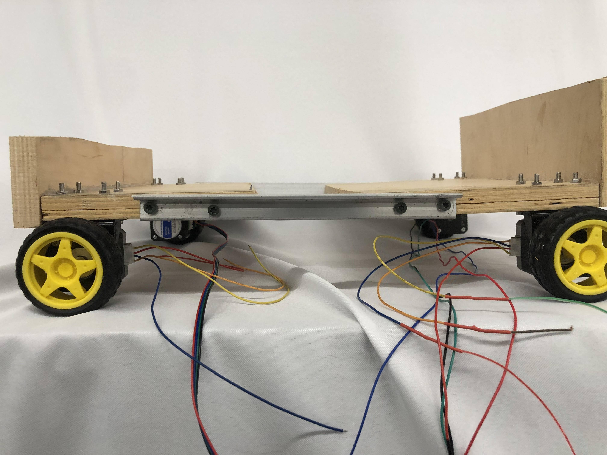
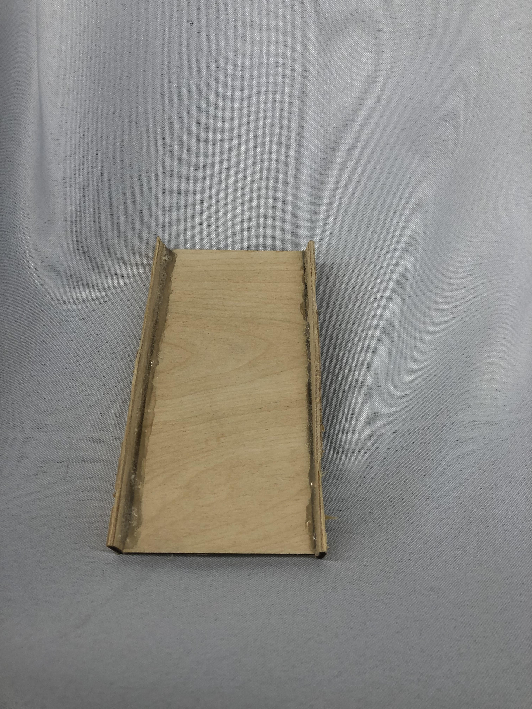

Final Project
My final project actually stemmed from another project I had seen entering the course
This project came from Harvard SEAS and was called Vaultbot
It consisted of a set of robots that autonomously created domes that allowd for building in dangerous regions
The way it works is that hollow bricks are transported to the railbot which places them
The reason the bricks are hollow is because they are meant to be filled with ISRU or on site resource utilization
See, one of the differences between the atmosphere of earth and mars is that mars' atmosphere is made up of 96% carbon dioxide
In essence, the regolith or dirt that mars has can be used as a radiation shield, hence, the hollow bricks
Moving on though, how do we collect the regolith?

This is MIT's version of the resource collection robot
I largely based my design off of this model as I thought it fit into my goals and was achievable in the amount of time given
So, I got to planning

First I had to decide how I was going to make the wheels
I thought that the best way to do this would be to use two large metal rods with wheels connected to both ends
The front wheels would accelarate while the back wheels would use a servo motor to turn

Afterwards I began planning on the collection system of the robot (or what I call the drum)
Although my drawings are bad, it made sense in my head, basically: the drum would need scoopers to collect the dirt and would also need a way to keep the dirt from falling back out
This can be done by attaching something to the body of the robot on the hollow end of the drum so that it doesnt spin with the drum
Either way, it was time to get started on the wheels
I designed a way for the motor to attach to the bar in fusion360
After adjustments it ended up looking something like this
After that I would need some bearings in order to make sure everything stayed in place as I had planned for the wheels to be inside the frame of the bot
Thing is, these designs ended up not working, and I came up with a better idea for how to do the wheels
I ended up getting a piece of wood that I thought would be big enough for the project and attaching 4 stepper motors to all corners of the robot
After that the only next logical step is to attach the wheels
I was originally planning on having bigger better wheels for this project but ended up not getting them delivered so I had to make do
The way it's designed is as an extruded circle with gaps on 4 sides allowing for scooper placement

Printed out it looked something like this:

The only issue was is that the scoopers and the drum werent the best fit, so I decided to change some values and create a bigger gap by 6 mm
Here you can see that I printed out one section of the drum so I could reduce the print time and see if it was a good fit
Spoiler alert: it was
Because of this I decied to finish off the drum and print the rest
Tada! heres our finished drum with scoopers
What came next was just working on the body of the robot
I started off by attaching a piece of wall to the bot
I added another piece on the other side and made a big enough gap for the drum
I thought this would be fine but I would actually end up needing even more space so I tore the whole thing in half
This gave me extra space and extra support because I used an L shaped piece of aluminium attached with wood screws
This proved to be a deciding moment in the creation of the body as it allowed for the once bendy robot to now be completely stable
Now it was time to really finish things up
I used hot glue on all of the drum's cracks to make sure that no sand would slip
And as you can see, attached it to a motor that allowed for the scoopers to be at ground level:
Though you might thing that the project would now be done, we need a way for the sand to actually be collected, not just grabbed and dropped back again
I decided to follow MIT's design again, in their own design they have a ramp that collects the dirt, allowing for gravity to do all of the work
So, I did the same
I created a ramp, with walls that surrounded it just to make sure we could collect as much as possible
However, the drum was above the rest of the robots body so I used a design like this:
With this I had the ramp attached to an angled piece of wood that it allowed it to be raised up and placed inside the drum
When doing this though you have to be careful to make sure that your ramp isnt too wide or too long that its hitting any of the drums insides as that can create friction
In the end, it ended up looking something like this: